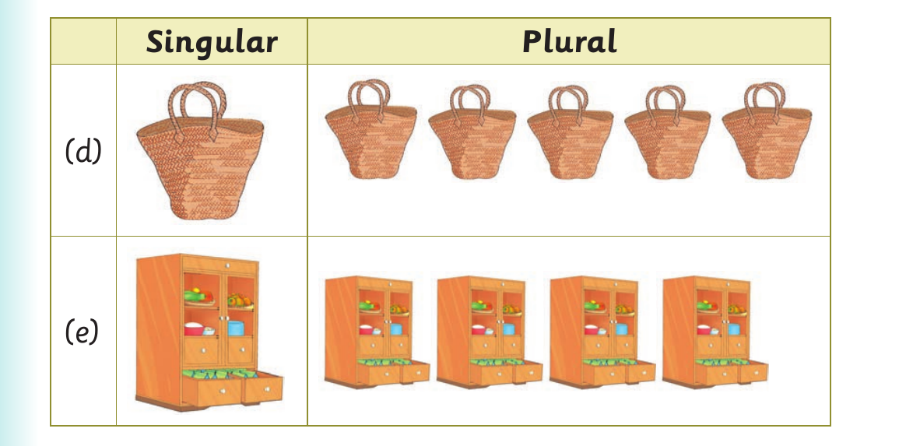

Singular and plural forms - sentences and pictures continued

Singular Plural (d) Clean the floor with these Clean the floor mops. with this____. (e) I like playing with toys. I like playing with a _____.

5. Make one sentence for each of the following pictures orally: Singular Plural (a) (b) (c)
Objects and things found at home - continued

Singular Plural (d) (e)